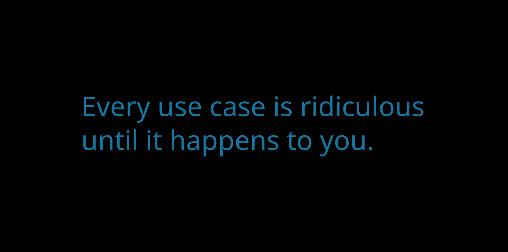

Section 1 Reading files and string manipulation

1.1 Section on readr
1.2 String manipulation with stringr
stringr is the tidyverse package for string manipulation, and exists in an interesting symbiosis with the stringi package. For the most part, stringr is a wrapper around stringi, and is almost always more than sufficient for day-to-day needs.
stringr functions begin with str_.
1.2.1 Puting strings together
Concatenate two strings with str_c, and duplicate strings with str_dup. Flatten a list or vector of strings using str_flatten.
## [1] "this string_this other string"## [1] "this stringthis stringthis string"## [1] "a_b_c_d_e_f_g_h_i_j_k_l_m_n_o_p_q_r_s_t_u_v_w_x_y_z"## [1] "a-b-c-d-e-f-g-h-i-j-k-l-m-n-o-p-q-r-s-t-u-v-w-x-y-z"str_flatten is especially useful when displaying the type of an object that returns a list when class is called on it.
# get the class of a tibble and display it as a single string
class_tibble = class(tibble::tibble(a = 1))
str_flatten(string = class_tibble, collapse = ", ")## [1] "tbl_df, tbl, data.frame"1.2.2 Detecting strings
Count the frequency of a pattern in a string with str_count. Returns an inteegr.
Detect whether a pattern exists in a string with str_detect. Returns a logical and can be used as a predicate.
Both are vectorised, i.e, automatically applied to a vector of arguments.
## [1] 5# vectorise over the input string
# this should return a vector of length 2, with integers 5 and 3
str_count(string = c("ababbababa", "banana"), pattern = "a")## [1] 5 3# vectorise over the pattern to count both a-s and b-s
str_count(string = "ababababa", pattern = c("a", "b"))## [1] 5 4Vectorising over both string and pattern works as expected.
# vectorise over both string and pattern
# counts a-s in first input, and b-s in the second
str_count(string = c("ababababa", "banana"), pattern = c("a", "b"))## [1] 5 1# provide a longer pattern vector to search for both a-s and b-s in both inputs
str_count(string = c("ababababa", "banana"), pattern = c("a", "b",
"b", "a"))## [1] 5 1 4 3str_locate locates the search pattern in a string, and returns the start and end as a two column matrix.
# the behaviour of both str_locate and str_locate_all is
# to find the first match by default
str_locate(string = "banana", pattern = "ana")## start end
## [1,] 2 4# str_detect detects a sequence in a string
str_detect(string = "Bananageddon is coming!", pattern = "na")## [1] TRUE# str_detect is also vectorised and returns a two-element logical vector
str_detect(string = "Bananageddon is coming!", pattern = c("na", "don"))## [1] TRUE TRUE# use any or all to convert a multi-element logical to a single logical
# here we ask if either of the patterns is detected
any(str_detect(string = "Bananageddon is coming!", pattern = c("na", "don")))## [1] TRUEDetect whether a string starts or ends with a pattern. Also vectorised.
Both have a negate argument, which returns the negative, i.e., returns FALSE if the search pattern is detected.
# taken straight from the examples, because they suffice
fruit <- c("apple", "banana", "pear", "pineapple")
# str_detect looks at the first character
str_starts(fruit, "p")## [1] FALSE FALSE TRUE TRUE## [1] TRUE FALSE FALSE TRUE## [1] FALSE TRUE TRUE FALSEstr_subset [WHICH IS NOT RELATED TO str_sub] helps with subsetting a character vector based on a str_detect predicate.
In the example, all elements containing “banana” are subset.
str_which has the same logic except that it returns the vector position and not the elements.
# should return a subset vector containing the first two elements
str_subset(c("banana",
"bananageddon is coming",
"applegeddon is not real"),
pattern = "banana")## [1] "banana" "bananageddon is coming"# returns an integer vector
str_which(c("banana",
"bananageddon is coming",
"applegeddon is not real"),
pattern = "banana")## [1] 1 21.2.3 Matching strings
str_match returns all positive matches of the patttern in the string.
The return type is a list, with one element per search pattern.
A simple case is shown below where the search pattern is the phrase “banana”.
## [,1]
## [1,] "banana"
## [2,] "banana"
## [3,] "banana"The search pattern can be extended to look for multiple subsets of the search pattern. Consider searching for dates and times.
Here, the search pattern is a regex pattern that looks for a set of four digits (\\d{4}) and a month name (\\w+) seperated by a hyphen. There’s much more to be explored in dealing with dates and times in [lubridate](https://lubridate.tidyverse.org/), another tidyverse package.
The return type is a list, each element is a character matrix where the first column is the string subset matching the full search pattern, and then as many columns as there are parts to the search pattern. The parts of interest in the search pattern are indicated by wrapping them in parentheses. For example, in the case below, wrapping [-.] in parentheses will turn it into a distinct part of the search pattern.
# first with [-.] treated simply as a separator
str_match(string = c("1970-somemonth-01",
"1990-anothermonth-01",
"2010-thismonth-01"),
pattern = "(\\d{4})[-.](\\w+)")## [,1] [,2] [,3]
## [1,] "1970-somemonth" "1970" "somemonth"
## [2,] "1990-anothermonth" "1990" "anothermonth"
## [3,] "2010-thismonth" "2010" "thismonth"# then with [-.] actively searched for
str_match(string = c("1970-somemonth-01",
"1990-anothermonth-01",
"2010-thismonth-01"),
pattern = "(\\d{4})([-.])(\\w+)")## [,1] [,2] [,3] [,4]
## [1,] "1970-somemonth" "1970" "-" "somemonth"
## [2,] "1990-anothermonth" "1990" "-" "anothermonth"
## [3,] "2010-thismonth" "2010" "-" "thismonth"Multiple possible matches are dealt with using str_match_all. An example case is uncertainty in date-time in raw data, where the date has been entered as 1970-somemonth-01 or 1970/anothermonth/01.
The return type is a list, with one element per input string. Each element is a character matrix, where each row is one possible match, and each column after the first (the full match) corresponds to the parts of the search pattern.
# first with a single date entry
str_match_all(string = c("1970-somemonth-01 or maybe 1990/anothermonth/01"),
pattern = "(\\d{4})[\\-\\/]([a-z]+)")## [[1]]
## [,1] [,2] [,3]
## [1,] "1970-somemonth" "1970" "somemonth"
## [2,] "1990/anothermonth" "1990" "anothermonth"# then with multiple date entries
str_match_all(string = c("1970-somemonth-01 or maybe 1990/anothermonth/01",
"1990-somemonth-01 or maybe 2001/anothermonth/01"),
pattern = "(\\d{4})[\\-\\/]([a-z]+)")## [[1]]
## [,1] [,2] [,3]
## [1,] "1970-somemonth" "1970" "somemonth"
## [2,] "1990/anothermonth" "1990" "anothermonth"
##
## [[2]]
## [,1] [,2] [,3]
## [1,] "1990-somemonth" "1990" "somemonth"
## [2,] "2001/anothermonth" "2001" "anothermonth"1.2.4 Simpler pattern extraction
The full functionality of str_match_* can be boiled down to the most common use case, extracting one or more full matches of the search pattern using str_extract and str_extract_all respectively.
str_extract returns a character vector with the same length as the input string vector, while str_extract_all returns a list, with a character vector whose elements are the matches.
# extracting the first full match using str_extract
str_extract(string = c("1970-somemonth-01 or maybe 1990/anothermonth/01",
"1990-somemonth-01 or maybe 2001/anothermonth/01"),
pattern = "(\\d{4})[\\-\\/]([a-z]+)")## [1] "1970-somemonth" "1990-somemonth"# extracting all full matches using str_extract all
str_extract_all(string = c("1970-somemonth-01 or maybe 1990/anothermonth/01",
"1990-somemonth-01 or maybe 2001/anothermonth/01"),
pattern = "(\\d{4})[\\-\\/]([a-z]+)")## [[1]]
## [1] "1970-somemonth" "1990/anothermonth"
##
## [[2]]
## [1] "1990-somemonth" "2001/anothermonth"1.2.5 Breaking strings apart
str_split, str_sub,
In the above date-time example, when reading filenames from a path, or when working sequences separated by a known pattern generally, str_split can help separate elements of interest.
The return type is a list similar to str_match.
# split on either a hyphen or a forward slash
str_split(string = c("1970-somemonth-01",
"1990/anothermonth/01"),
pattern = "[\\-\\/]")## [[1]]
## [1] "1970" "somemonth" "01"
##
## [[2]]
## [1] "1990" "anothermonth" "01"This can be useful in recovering simulation parameters from a filename, but may require some knowledge of regex.
# assume a simulation output file
filename = "sim_param1_0.01_param2_0.05_param3_0.01.ext"
# not quite there
str_split(filename, pattern = "_")## [[1]]
## [1] "sim" "param1" "0.01" "param2" "0.05" "param3" "0.01.ext"## [[1]]
## [1] ""
## [2] "param1_0.01_param2_0.05_param3_0.01.ext"## [[1]]
## [1] "" "" "0.01" "0.05" "0.01" ""str_split_fixed split the string into as many pieces as specified, and can be especially useful dealing with filepaths.
# split on either a hyphen or a forward slash
str_split_fixed(string = "dir_level_1/dir_level_2/file.ext",
pattern = "/",
n = 2)## [,1] [,2]
## [1,] "dir_level_1" "dir_level_2/file.ext"1.2.6 Replacing string elements
str_replace is intended to replace the search pattern, and can be co-opted into the task of recovering simulation parameters or other data from regularly named files. str_replace_all works the same way but replaces all matches of the search pattern.
# replace all unwanted characters from this hypothetical filename with spaces
filename = "sim_param1_0.01_param2_0.05_param3_0.01.ext"
str_replace_all(filename,
pattern = "(sim_)|_*param\\d{1}_|(.ext)",
replacement = " ")## [1] " 0.01 0.05 0.01 "str_remove is a wrapper around str_replace where the replacement is set to "". This is not covered here.
Having replaced unwanted characters in the filename with spaces, str_trim offers a way to remove leading and trailing whitespaces.
# trim whitespaces from this filename after replacing unwanted text
filename = "sim_param1_0.01_param2_0.05_param3_0.01.ext"
filename_with_spaces = str_replace_all(filename,
pattern = "(sim_)|_*param\\d{1}_|(.ext)",
replacement = " ")
filename_without_spaces = str_trim(filename_with_spaces)
filename_without_spaces## [1] "0.01 0.05 0.01"# the result can be split on whitespaces to return useful data
str_split(filename_without_spaces, " ")## [[1]]
## [1] "0.01" "0.05" "0.01"1.2.7 Subsetting within strings
When strings are highly regular, useful data can be extracted from a string using str_sub. In the date-time example, the year is always represented by the first four characters.
# get the year as characters 1 - 4
str_sub(string = c("1970-somemonth-01",
"1990-anothermonth-01",
"2010-thismonth-01"),
start = 1, end = 4)## [1] "1970" "1990" "2010"Similarly, it’s possible to extract the last few characters using negative indices.
# get the day as characters -2 to -1
str_sub(string = c("1970-somemonth-01",
"1990-anothermonth-21",
"2010-thismonth-31"),
start = -2, end = -1)## [1] "01" "21" "31"Finally, it’s also possible to replace characters within a string based on the position. This requires using the assignment operator <-.
# replace all days in these dates to 01
date_times = c("1970-somemonth-25",
"1990-anothermonth-21",
"2010-thismonth-31")
# a strictly necessary use of the assignment operator
str_sub(date_times,
start = -2, end = -1) <- "01"
date_times## [1] "1970-somemonth-01" "1990-anothermonth-01" "2010-thismonth-01"1.2.8 Padding and truncating strings
Strings included in filenames or plots are often of unequal lengths, especially when they represent numbers. str_pad can pad strings with suitable characters to maintain equal length filenames, with which it is easier to work.
# pad so all values have three digits
str_pad(string = c("1", "10", "100"),
width = 3,
side = "left",
pad = "0")## [1] "001" "010" "100"Strings can also be truncated if they are too long.
str_trunc(string = c("bananas are great and wonderful
and more stuff about bananas and
it really goes on about bananas"),
width = 27,
side = "right", ellipsis = "etc. etc.")## [1] "bananas are great etc. etc."1.2.9 Stringr aspects not covered here
Some stringr functions are not covered here. These include:
- str_wrap (of dubious use),
- str_interp, str_glue* (better to use glue; see below),
- str_sort, str_order (used in sorting a character vector),
- str_to_case* (case conversion), and
- str_view* (a graphical view of search pattern matches).
stringi, of which stringr is a wrapper, offers a lot more flexibility and control.
1.3 String interpolation with glue
The idea behind string interpolation is to procedurally generate new complex strings from pre-existing data.
glue is as simple as the example shown.
# print that each car name is a car model
cars = rownames(head(mtcars))
glue('The {cars} is a car model')## The Mazda RX4 is a car model
## The Mazda RX4 Wag is a car model
## The Datsun 710 is a car model
## The Hornet 4 Drive is a car model
## The Hornet Sportabout is a car model
## The Valiant is a car modelThis creates and prints a vector of car names stating each is a car model.
The related glue_data is even more useful in printing from a dataframe.
In this example, it can quickly generate command line arguments or filenames.
# use dataframes for now
parameter_combinations = data.frame(param1 = letters[1:5],
param2 = 1:5)
# for command line arguments or to start multiple job scripts on the cluster
glue_data(parameter_combinations,
'simulation-name {param1} {param2}')## simulation-name a 1
## simulation-name b 2
## simulation-name c 3
## simulation-name d 4
## simulation-name e 5## sim_data_param1_a_param2_1.ext
## sim_data_param1_b_param2_2.ext
## sim_data_param1_c_param2_3.ext
## sim_data_param1_d_param2_4.ext
## sim_data_param1_e_param2_5.extFinally, the convenient glue_sql and glue_data_sql are used to safely write SQL queries where variables from data are appropriately quoted. This is not covered here, but it is good to know it exists.
glue has some more functions — glue_safe, glue_collapse, and glue_col, but these are infrequently used. Their functionality can be found on the glue github page.